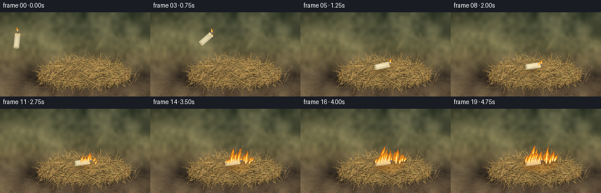
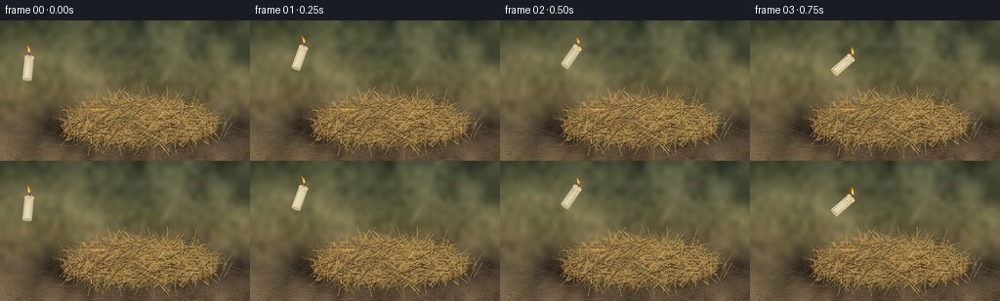

CODING AGENTS AS PIXEL WORLD MODELS
traex/GPT-6.1-Sol · phygen_144
点击播放 · 原生 RGB 像素
逐轮保存的候选
回放视频、检查图与代码变化。
每份候选均可单独播放。实际图片检查记录在下方工具轨迹中。
候选 01播放与检查图
点击播放 · 原生 RGB 像素


展开代码变化
--- 上一保存版本
+++ 本次保存版本
@@ -0,0 +1,265 @@
+from pathlib import Path
+import math
+import numpy as np
+from PIL import Image, ImageDraw, ImageFilter
+from artifact_io import save
+
+ROOT = Path(__file__).resolve().parent
+W, H, S = 256, 144, 4
+SW, SH = W*S, H*S
+rng = np.random.default_rng(144)
+
+def xy(points):
+ return [(int(x*S), int(y*S)) for x,y in points]
+def line(d, pts, fill, width=0.4):
+ d.line(xy(pts), fill=fill, width=max(1,round(width*S)), joint='curve')
+def ellipse(d, box, fill):
+ d.ellipse(tuple(int(v*S) for v in box), fill=fill)
+def poly(d, pts, fill):
+ d.polygon(xy(pts), fill=fill)
+def bezier(a,b,c,d,n=18):
+ tt=np.linspace(0,1,n)[:,None]
+ return (1-tt)**3*np.array(a)+3*(1-tt)**2*tt*np.array(b)+3*(1-tt)*tt**2*np.array(c)+tt**3*np.array(d)
+
+# A photograph-like, shallow-depth-of-field field, constructed without source imagery.
+y,x=np.mgrid[0:SH,0:SW].astype(float); x/=S; y/=S
+base=np.zeros((SH,SW,3),float)
+stops=[(0,(63,69,49)),(32,(86,88,62)),(58,(111,107,72)),(77,(111,99,67)),(109,(82,70,53)),(144,(101,83,60))]
+for a,b in zip(stops[:-1],stops[1:]):
+ q=np.clip((y-a[0])/(b[0]-a[0]),0,1)
+ mask=(y>=a[0])&(y<=b[0])
+ for k in range(3): base[:,:,k][mask]=(a[1][k]*(1-q)+b[1][k]*q)[mask]
+# Multiscale soft vegetation variation.
+for size,amp in [(12,15),(38,7),(160,2.8)]:
+ noise=rng.normal(0,1,(max(2,int(size*.5625)),size))
+ ni=Image.fromarray(np.uint8(np.clip(127+noise*28,0,255))).resize((SW,SH),Image.Resampling.BICUBIC)
+ v=(np.asarray(ni).astype(float)-127)/28
+ base+=v[:,:,None]*np.array([amp,amp*.9,amp*.64])
+base+=np.exp(-((x-12)**2/9000+(y-25)**2/2800))[:,:,None]*np.array([19,15,8])
+bg=Image.fromarray(np.uint8(np.clip(base,0,255)))
+bd=ImageDraw.Draw(bg,'RGBA')
+for i in range(390):
+ xx=rng.uniform(-15,270); yy=rng.uniform(40,105)
+ hh=rng.uniform(4,31)*(yy/100)
+ shade=rng.choice([0,1,2]); col=[(155,139,88,75),(186,163,107,78),(67,73,45,85)][shade]
+ bend=rng.uniform(-5,5)
+ pts=bezier((xx,yy),(xx,yy-hh*.35),(xx+bend,yy-hh*.75),(xx+bend,yy-hh))
+ line(bd,pts,col,rng.uniform(.3,.8))
+ if i%3==0:
+ for p in np.linspace(.65,1,5):
+ xp=xx+bend*p; yp=yy-hh*p
+ line(bd,[(xp-1.3,yp+2),(xp,yp),(xp+1.2,yp+1.4)],col,.5)
+bg=bg.filter(ImageFilter.GaussianBlur(2.1*S))
+# Uneven earthen foreground and scattered straw.
+terrain=Image.new('RGBA',(SW,SH)); td=ImageDraw.Draw(terrain)
+for i in range(4400):
+ xx=rng.uniform(0,256); yy=rng.uniform(84,144)
+ rad=rng.uniform(.1,1.25)*(yy/144)**2
+ v=int(rng.uniform(48,120))
+ ellipse(td,(xx-rad,yy-rad*.5,xx+rad,yy+rad*.5),(v+14,v+1,max(0,v-15),rng.integers(45,125)))
+for i in range(150):
+ xx=rng.uniform(-10,256); yy=rng.uniform(109,153)
+ length=rng.uniform(5,25); ang=rng.uniform(-.45,.45)
+ line(td,[(xx,yy),(xx+length*math.cos(ang),yy+length*math.sin(ang))],(168,137,82,int(rng.integers(80,160))),rng.uniform(.2,.55))
+bg=Image.alpha_composite(bg.convert('RGBA'),terrain)
+shadow=Image.new('RGBA',(SW,SH)); sd=ImageDraw.Draw(shadow)
+ellipse(sd,(51,103,231,129),(20,15,10,100))
+shadow=shadow.filter(ImageFilter.GaussianBlur(4*S))
+bg=Image.alpha_composite(bg,shadow)
+# Dense dry-grass heap: a darker interwoven core with individually lit stems.
+heap=Image.new('RGBA',(SW,SH)); hd=ImageDraw.Draw(heap)
+outline=[]
+for z in np.linspace(math.pi,2*math.pi,100):
+ xx=143+79*math.cos(z); yy=111+29*math.sin(z)
+ yy+=1.2*math.sin(z*33)+.8*math.cos(z*61)
+ outline.append((xx,yy))
+outline += [(217,116),(202,122),(158,125),(107,123),(67,116)]
+poly(hd,outline,(111,85,43,255))
+for i in range(1750):
+ a=rng.uniform(0,2*math.pi); r=math.sqrt(rng.uniform(0,1))
+ xx=143+72*r*math.cos(a); yy=104+21*r*math.sin(a)
+ length=rng.uniform(10,44)
+ ang=rng.uniform(-math.pi,math.pi)
+ # Most cut grass lies sideways, with loose diagonal stems at the top.
+ if i%4: ang=rng.normal(0,.52)+(math.pi if rng.random()<.5 else 0)
+ dx=math.cos(ang)*length/2; dy=math.sin(ang)*length/2
+ bend=rng.uniform(-3,3)
+ pts=bezier((xx-dx,yy-dy),(xx-dx*.25,yy-dy*.25+bend),(xx+dx*.42,yy+dy*.42+bend),(xx+dx,yy+dy))
+ v=rng.uniform(.68,1.23)
+ col=tuple(int(min(255,c*v)) for c in (173,139,78))+(255,)
+ width=rng.uniform(.22,.65)
+ if i%3==0: line(hd,pts+np.array([.35,.6]),(69,52,27,150),width+.3)
+ line(hd,pts,col,width)
+ if i%3==0: line(hd,pts[:14]+np.array([-.15,-.15]),(222,188,115,150),max(.18,width*.45))
+ if i%11==0:
+ # Brittle seed-bearing tufts retained in the hay.
+ tx,ty=pts[-1]; ux,uy=math.cos(ang),math.sin(ang)
+ for j in range(5):
+ px=tx-ux*j*1.1; py=ty-uy*j*1.1
+ line(hd,[(px-uy*1.0,py+ux*1.0),(px+ux*.75,py+uy*.75),(px+uy*.9,py-ux*.9)],(185,155,91,235),.42)
+bg=Image.alpha_composite(bg,heap)
+# Loose vertical stalks on the outside of the pile.
+d=ImageDraw.Draw(bg,'RGBA')
+for i in range(85):
+ xx=rng.uniform(62,231); yy=rng.uniform(108,124)
+ if 99<xx<185 and rng.random()<.8: continue
+ h=rng.uniform(5,20); b=rng.uniform(-11,11)
+ pts=bezier((xx,yy),(xx+b*.2,yy-h*.2),(xx+b*.65,yy-h*.7),(xx+b,yy-h))
+ line(d,pts,(178+int(rng.integers(-18,25)),145+int(rng.integers(-12,18)),86,220),rng.uniform(.25,.6))
+
+# Fixed foreground occluders placed just over the resting wax, anchoring it in the heap.
+foreground=[]
+for i in range(20):
+ xx=rng.uniform(118,151); yy=rng.uniform(98,105)
+ foreground.append((bezier((xx-7,yy+3),(xx-4,yy),(xx+2,yy-2),(xx+8,yy-1)),tuple(int(v) for v in (rng.uniform(135,206),rng.uniform(106,161),rng.uniform(53,89)))+(255,)))
+
+def flame(layer,cx,cy,height,width,t,seed=0,lean=0,candle=False):
+ """A continuous buoyant flame with nested, corrugated tapered contours."""
+ d=ImageDraw.Draw(layer)
+ phase=seed*2.31
+ n=40; zs=np.linspace(0,1,n)
+ centers=[]; radii=[]
+ for z in zs:
+ sway=(math.sin(7.3*t+phase+z*5)+.42*math.sin(14*t+phase-z*11))*width*.19*z
+ centers.append(cx+lean*z*z+sway)
+ envelope=(math.sin(math.pi*z)**.78)*(.83-.35*z)
+ serration=1+.14*math.sin(z*26-t*12+phase)+.075*math.cos(z*51+t*7)
+ radii.append(width*envelope*serration)
+ def contour(scale,hscale,offset=0):
+ left=[]; right=[]
+ for j,z in enumerate(zs):
+ left.append((cx+(centers[j]-cx)*hscale-radii[j]*scale,cy-height*z*hscale+offset))
+ right.append((cx+(centers[j]-cx)*hscale+radii[j]*scale,cy-height*z*hscale+offset))
+ return left+right[::-1]
+ poly(d,contour(1.2,1),(245,83,9,65 if candle else 90))
+ poly(d,contour(.94,.97),(255,125,12,180))
+ poly(d,contour(.69,.81),(255,182,29,245))
+ poly(d,contour(.39,.61),(255,232,129,255))
+ poly(d,contour(.19,.36),(255,247,202,255))
+ if candle: ellipse(d,(cx-1.05,cy-1.3,cx+1.0,cy+.35),(88,108,200,210))
+
+def candle_pose(t):
+ if t<=1.25: return 29+88*t,49-62*t+77*t*t,.10+t
+ age=t-1.25
+ return 139+1.3*(1-math.exp(-age*8)),91.8+.65*math.exp(-age*7)*math.sin(age*18),1.35+.08*(1-math.exp(-age*8))
+
+def draw_candle(im,t):
+ cx,cy,a=candle_pose(t)
+ axis=np.array([math.sin(a),-math.cos(a)]); side=np.array([math.cos(a),math.sin(a)])
+ L=23; R=4.7
+ def p(u,v): return tuple(np.array([cx,cy])+u*side+v*axis)
+ # Tight soft cast shadow approaches the receiving grass as the candle falls.
+ shade=Image.new('RGBA',(SW,SH)); dd=ImageDraw.Draw(shade)
+ gap=max(0,92-cy)
+ ellipse(dd,(cx-12-gap*.14,99-2-gap*.02,cx+12+gap*.14,104+gap*.02),(20,13,6,int(94*math.exp(-gap/29))))
+ shade=shade.filter(ImageFilter.GaussianBlur((1+gap*.06)*S))
+ im=Image.alpha_composite(im,shade)
+ layer=Image.new('RGBA',(SW,SH)); d=ImageDraw.Draw(layer)
+ # Round wax cylinder, shaded in longitudinal strips.
+ for u in np.linspace(-R,R,70):
+ light=.78+.22*math.sqrt(max(0,1-(u/R)**2))-.065*u/R
+ col=tuple(int(c*light) for c in (239,225,181))+(255,)
+ line(d,[p(u,-L/2),p(u,L/2)],col,.23)
+ def cap(v,rx,ry):
+ return [p(rx*math.cos(ang),v+ry*math.sin(ang)) for ang in np.linspace(0,2*math.pi,60)]
+ poly(d,cap(-L/2,R,1.45),(195,179,137,255))
+ poly(d,cap(L/2,R,1.8),(247,232,191,255))
+ poly(d,cap(L/2+.12,R*.69,1.14),(213,190,135,255))
+ poly(d,cap(L/2+.12,R*.40,.73),(233,206,144,255))
+ # Uneven pale rivulets and glistening melted wax lip.
+ for u,ln in [(-3.3,5.7),(-1.2,3.1),(2.3,6.2)]:
+ pts=[p(u,L/2-.6),p(u+.18,L/2-ln*.4),p(u-.1,L/2-ln)]
+ line(d,pts,(247,232,196,240),.6)
+ ellipse(d,(pts[-1][0]-.45,pts[-1][1]-.35,pts[-1][0]+.45,pts[-1][1]+.5),(240,222,181,255))
+ line(d,[p(-3.25,-9),p(-3.25,9)],(255,240,204,130),.5)
+ wick=np.array(p(0,L/2+1.1)); tip=wick+axis*2.0+np.array([-.45,-.6])
+ line(d,[tuple(wick),tuple(tip)],(54,37,20,255),.75)
+ ellipse(d,(tip[0]-.35,tip[1]-.4,tip[0]+.35,tip[1]+.2),(255,133,25,255))
+ im=Image.alpha_composite(im,layer)
+ return im,tip
+
+# Animated smoke puffs use deterministic paths, so wisps advect instead of popping.
+smoke_particles=[]
+for j in range(62):
+ birth=1.7+j*.065
+ smoke_particles.append((birth,float(rng.uniform(-5,5)),float(rng.uniform(.6,1.5)),float(rng.uniform(0,6.28))))
+fire_sites=[]
+for j in range(18):
+ dx=float(rng.uniform(-25,28))
+ birth=1.63+abs(dx)/16+float(rng.uniform(0,.40))
+ fire_sites.append((dx,float(rng.uniform(-3.3,3.3)),birth,float(rng.uniform(14,32)),float(rng.uniform(2.1,4.4)),j))
+# First contact must ignite exactly beside the wick, followed by outward spread.
+fire_sites.insert(0,(0.,0.,1.65,24.,3.,33))
+
+frames=[]
+for frame in range(20):
+ t=frame/4
+ im=bg.copy()
+ age=max(0,t-1.6)
+ # Blackening beneath, limited to where fire has actually propagated.
+ if age>0:
+ char=Image.new('RGBA',(SW,SH)); cd=ImageDraw.Draw(char)
+ for dx,dy,birth,hh,ww,j in fire_sites:
+ a=max(0,t-birth)
+ if a>0:
+ ellipse(cd,(150+dx-4,91+dy-2,150+dx+5,96+dy),(35,26,17,int(min(180,a*58))))
+ char=char.filter(ImageFilter.GaussianBlur(.6*S))
+ im=Image.alpha_composite(im,char)
+ im,wick=draw_candle(im,t)
+ if t>=1.25:
+ fd=ImageDraw.Draw(im,'RGBA')
+ for pts,col in foreground: line(fd,pts,col,.33)
+ # Translucent gray smoke lifted by convection and slowly carried right.
+ if age>0:
+ smoke=Image.new('RGBA',(SW,SH)); sm=ImageDraw.Draw(smoke)
+ for birth,ox,rate,phase in smoke_particles:
+ a=t-birth
+ if not 0<a<3.3: continue
+ xx=151+ox+8*a+2.4*math.sin(2.8*a+phase)
+ yy=88-18*a*rate
+ rr=2.3+3.0*a
+ alpha=int(12*min(1,a*3)*max(0,1-a/3.5))
+ ellipse(sm,(xx-rr,yy-rr*.9,xx+rr,yy+rr*.9),(177,175,156,alpha))
+ smoke=smoke.filter(ImageFilter.GaussianBlur(2.0*S))
+ im=Image.alpha_composite(im,smoke)
+ # Restrained local illumination: lit hay remains visible, no full-frame orange filter.
+ light=Image.new('RGBA',(SW,SH)); ld=ImageDraw.Draw(light)
+ ellipse(ld,(wick[0]-8,wick[1]-7,wick[0]+8,wick[1]+7),(255,163,39,38))
+ if age>0:
+ extent=min(32,5+age*9)
+ ellipse(ld,(150-extent,76,153+extent,110),(255,142,25,int(min(58,age*24))))
+ light=light.filter(ImageFilter.GaussianBlur(4*S))
+ im=Image.alpha_composite(im,light)
+ flames=Image.new('RGBA',(SW,SH))
+ # Wick flame stays vertically buoyant even while the cylinder tumbles.
+ fh=8.3+1.2*math.sin(t*12)+.55*math.cos(t*19)
+ flame(flames,float(wick[0]),float(wick[1]),fh,1.8,t,2,lean=(-2.1 if t<1.25 else 1.2),candle=True)
+ # Grass flames grow from contact at the wick, never before landing.
+ for dx,dy,birth,hh,ww,j in sorted(fire_sites,key=lambda q:q[1]):
+ a=t-birth
+ if a<=0: continue
+ growth=min(1,a/1.5)**.65
+ h=hh*growth*(.88+.15*math.sin(t*9+j*2.1)+.06*math.sin(t*19+j))
+ flame(flames,150+dx,92+dy,h,ww*(.35+.65*growth),t,j,lean=2.3+2*growth)
+ # Subtle bloom only around hot pixels, keeping flame contours crisp.
+ glow=flames.filter(ImageFilter.GaussianBlur(1.5*S))
+ ar=np.array(glow); ar[:,:,3]=(ar[:,:,3]*.16).astype(np.uint8)
+ im=Image.alpha_composite(im,Image.fromarray(ar))
+ im=Image.alpha_composite(im,flames)
+ if age>1:
+ ed=ImageDraw.Draw(im,'RGBA')
+ for j in range(8):
+ start=2.3+j*.27; a=t-start
+ if 0<a<1.15:
+ xx=148+7*math.sin(j*3)+a*10; yy=88-a*26
+ ellipse(ed,(xx-.28,yy-.45,xx+.28,yy+.45),(255,187,76,int(210*(1-a/1.2))))
+ im=im.convert('RGB').resize((W,H),Image.Resampling.LANCZOS)
+ arr=np.asarray(im).astype(float)
+ # Gentle filmic contrast and optical falloff.
+ yy,xx=np.mgrid[0:H,0:W]
+ vignette=1-.12*((xx-133)/165)**2-.08*((yy-78)/115)**2
+ arr=(arr-12)*1.025+12
+ arr*=vignette[:,:,None]
+ frames.append(np.uint8(np.clip(arr,0,255)))
+save(np.stack(frames),ROOT)
+print('Saved 20 RGB frames at 256x144, 4 fps.')
可观测工具轨迹
实际执行的命令与返回图片。
命令 1exit 0
/bin/bash -lc "ls -la && cat prompt.txt && printf '\\n--- RULES ---\\n' && cat GENERATION_RULES.md && printf '\\n--- SPEC ---\\n' && cat task_spec.json"
命令 2exit 0
/bin/bash -lc "cat artifact_io.py && printf '\\n--- PYTHON PACKAGES ---\\n' && python - <<'PY'
import PIL,numpy
print('PIL',PIL.__version__,'numpy',numpy.__version__)
PY"命令 3exit 0
/bin/bash -lc "cat > generate.py <<'PY'
from pathlib import Path
import math
import numpy as np
from PIL import Image, ImageDraw, ImageFilter
from artifact_io import save
ROOT = Path(__file__).resolve().parent
W, H, S = 256, 144, 4
SW, SH = W*S, H*S
rng = np.random.default_rng(144)
def xy(points):
return [(int(x*S), int(y*S)) for x,y in points]
def line(d, pts, fill, width=0.4):
d.line(xy(pts), fill=fill, width=max(1,round(width*S)), joint='curve')
def ellipse(d, box, fill):
d.ellipse(tuple(int(v*S) for v in box), fill=fill)
def poly(d, pts, fill):
d.polygon(xy(pts), fill=fill)
def bezier(a,b,c,d,n=18):
tt=np.linspace(0,1,n)[:,None]
return (1-tt)**3*np.array(a)+3*(1-tt)**2*tt*np.array(b)+3*(1-tt)*tt**2*np.array(c)+tt**3*np.array(d)
# A photograph-like, shallow-depth-of-field field, constructed without source imagery.
y,x=np.mgrid[0:SH,0:SW].astype(float); x/=S; y/=S
base=np.zeros((SH,SW,3),float)
stops=[(0,(63,69,49)),(32,(86,88,62)),(58,(111,107,72)),(77,(111,99,67)),(109,(82,70,53)),(144,(101,83,60))]
for a,b in zip(stops[:-1],stops[1:]):
q=np.clip((y-a[0])/(b[0]-a[0]),0,1)
mask=(y>=a[0])&(y<=b[0])
for k in range(3): base[:,:,k][mask]=(a[1][k]*(1-q)+b[1][k]*q)[mask]
# Multiscale soft vegetation variation.
for size,amp in [(12,15),(38,7),(160,2.8)]:
noise=rng.normal(0,1,(max(2,int(size*.5625)),size))
ni=Image.fromarray(np.uint8(np.clip(127+noise*28,0,255))).resize((SW,SH),Image.Resampling.BICUBIC)
v=(np.asarray(ni).astype(float)-127)/28
base+=v[:,:,None]*np.array([amp,amp*.9,amp*.64])
base+=np.exp(-((x-12)**2/9000+(y-25)**2/2800))[:,:,None]*np.array([19,15,8])
bg=Image.fromarray(np.uint8(np.clip(base,0,255)))
bd=ImageDraw.Draw(bg,'RGBA')
for i in range(390):
xx=rng.uniform(-15,270); yy=rng.uniform(40,105)
hh=rng.uniform(4,31)*(yy/100)
shade=rng.choice([0,1,2]); col=[(155,139,88,75),(186,163,107,78),(67,73,45,85)][shade]
bend=rng.uniform(-5,5)
pts=bezier((xx,yy),(xx,yy-hh*.35),(xx+bend,yy-hh*.75),(xx+bend,yy-hh))
line(bd,pts,col,rng.uniform(.3,.8))
if i%3==0:
for p in np.linspace(.65,1,5):
xp=xx+bend*p; yp=yy-hh*p
line(bd,[(xp-1.3,yp+2),(xp,yp),(xp+1.2,yp+1.4)],col,.5)
bg=bg.filter(ImageFilter.GaussianBlur(2.1*S))
# Uneven earthen foreground and scattered straw.
terrain=Image.new('RGBA',(SW,SH)); td=ImageDraw.Draw(terrain)
for i in range(4400):
xx=rng.uniform(0,256); yy=rng.uniform(84,144)
rad=rng.uniform(.1,1.25)*(yy/144)**2
v=int(rng.uniform(48,120))
ellipse(td,(xx-rad,yy-rad*.5,xx+rad,yy+rad*.5),(v+14,v+1,max(0,v-15),rng.integers(45,125)))
for i in range(150):
xx=rng.uniform(-10,256); yy=rng.uniform(109,153)
length=rng.uniform(5,25); ang=rng.uniform(-.45,.45)
line(td,[(xx,yy),(xx+length*math.cos(ang),yy+length*math.sin(ang))],(168,137,82,int(rng.integers(80,160))),rng.uniform(.2,.55))
bg=Image.alpha_composite(bg.convert('RGBA'),terrain)
shadow=Image.new('RGBA',(SW,SH)); sd=ImageDraw.Draw(shadow)
ellipse(sd,(51,103,231,129),(20,15,10,100))
shadow=shadow.filter(ImageFilter.GaussianBlur(4*S))
bg=Image.alpha_composite(bg,shadow)
# Dense dry-grass heap: a darker interwoven core with individually lit stems.
heap=Image.new('RGBA',(SW,SH)); hd=ImageDraw.Draw(heap)
outline=[]
for z in np.linspace(math.pi,2*math.pi,100):
xx=143+79*math.cos(z); yy=111+29*math.sin(z)
yy+=1.2*math.sin(z*33)+.8*math.cos(z*61)
outline.append((xx,yy))
outline += [(217,116),(202,122),(158,125),(107,123),(67,116)]
poly(hd,outline,(111,85,43,255))
for i in range(1750):
a=rng.uniform(0,2*math.pi); r=math.sqrt(rng.uniform(0,1))
xx=143+72*r*math.cos(a); yy=104+21*r*math.sin(a)
length=rng.uniform(10,44)
ang=rng.uniform(-math.pi,math.pi)
# Most cut grass lies sideways, with loose diagonal stems at the top.
if i%4: ang=rng.normal(0,.52)+(math.pi if rng.random()<.5 else 0)
dx=math.cos(ang)*length/2; dy=math.sin(ang)*length/2
bend=rng.uniform(-3,3)
pts=bezier((xx-dx,yy-dy),(xx-dx*.25,yy-dy*.25+bend),(xx+dx*.42,yy+dy*.42+bend),(xx+dx,yy+dy))
v=rng.uniform(.68,1.23)
col=tuple(int(min(255,c*v)) for c in (173,139,78))+(255,)
width=rng.uniform(.22,.65)
if i%3==0: line(hd,pts+np.array([.35,.6]),(69,52,27,150),width+.3)
line(hd,pts,col,width)
if i%3==0: line(hd,pts[:14]+np.array([-.15,-.15]),(222,188,115,150),max(.18,width*.45))
if i%11==0:
# Brittle seed-bearing tufts retained in the hay.
tx,ty=pts[-1]; ux,uy=math.cos(ang),math.sin(ang)
for j in range(5):
px=tx-ux*j*1.1; py=ty-uy*j*1.1
line(hd,[(px-uy*1.0,py+ux*1.0),(px+ux*.75,py+uy*.75),(px+uy*.9,py-ux*.9)],(185,155,91,235),.42)
bg=Image.alpha_composite(bg,heap)
# Loose vertical stalks on the outside of the pile.
d=ImageDraw.Draw(bg,'RGBA')
for i in range(85):
xx=rng.uniform(62,231); yy=rng.uniform(108,124)
if 99<xx<185 and rng.random()<.8: continue
h=rng.uniform(5,20); b=rng.uniform(-11,11)
pts=bezier((xx,yy),(xx+b*.2,yy-h*.2),(xx+b*.65,yy-h*.7),(xx+b,yy-h))
line(d,pts,(178+int(rng.integers(-18,25)),145+int(rng.integers(-12,18)),86,220),rng.uniform(.25,.6))
# Fixed foreground occluders placed just over the resting wax, anchoring it in the heap.
foreground=[]
for i in range(20):
xx=rng.uniform(118,151); yy=rng.uniform(98,105)
foreground.append((bezier((xx-7,yy+3),(xx-4,yy),(xx+2,yy-2),(xx+8,yy-1)),tuple(int(v) for v in (rng.uniform(135,206),rng.uniform(106,161),rng.uniform(53,89)))+(255,)))
def flame(layer,cx,cy,height,width,t,seed=0,lean=0,candle=False):
\"\"\"A continuous buoyant flame with nested, corrugated tapered contours.\"\"\"
d=ImageDraw.Draw(layer)
phase=seed*2.31
n=40; zs=np.linspace(0,1,n)
centers=[]; radii=[]
for z in zs:
sway=(math.sin(7.3*t+phase+z*5)+.42*math.sin(14*t+phase-z*11))*width*.19*z
centers.append(cx+lean*z*z+sway)
envelope=(math.sin(math.pi*z)**.78)*(.83-.35*z)
serration=1+.14*math.sin(z*26-t*12+phase)+.075*math.cos(z*51+t*7)
radii.append(width*envelope*serration)
def contour(scale,hscale,offset=0):
left=[]; right=[]
for j,z in enumerate(zs):
left.append((cx+(centers[j]-cx)*hscale-radii[j]*scale,cy-height*z*hscale+offset))
right.append((cx+(centers[j]-cx)*hscale+radii[j]*scale,cy-height*z*hscale+offset))
return left+right[::-1]
poly(d,contour(1.2,1),(245,83,9,65 if candle else 90))
poly(d,contour(.94,.97),(255,125,12,180))
poly(d,contour(.69,.81),(255,182,29,245))
poly(d,contour(.39,.61),(255,232,129,255))
poly(d,contour(.19,.36),(255,247,202,255))
if candle: ellipse(d,(cx-1.05,cy-1.3,cx+1.0,cy+.35),(88,108,200,210))
def candle_pose(t):
if t<=1.25: return 29+88*t,49-62*t+77*t*t,.10+t
age=t-1.25
return 139+1.3*(1-math.exp(-age*8)),91.8+.65*math.exp(-age*7)*math.sin(age*18),1.35+.08*(1-math.exp(-age*8))
def draw_candle(im,t):
cx,cy,a=candle_pose(t)
axis=np.array([math.sin(a),-math.cos(a)]); side=np.array([math.cos(a),math.sin(a)])
L=23; R=4.7
def p(u,v): return tuple(np.array([cx,cy])+u*side+v*axis)
# Tight soft cast shadow approaches the receiving grass as the candle falls.
shade=Image.new('RGBA',(SW,SH)); dd=ImageDraw.Draw(shade)
gap=max(0,92-cy)
ellipse(dd,(cx-12-gap*.14,99-2-gap*.02,cx+12+gap*.14,104+gap*.02),(20,13,6,int(94*math.exp(-gap/29))))
shade=shade.filter(ImageFilter.GaussianBlur((1+gap*.06)*S))
im=Image.alpha_composite(im,shade)
layer=Image.new('RGBA',(SW,SH)); d=ImageDraw.Draw(layer)
# Round wax cylinder, shaded in longitudinal strips.
for u in np.linspace(-R,R,70):
light=.78+.22*math.sqrt(max(0,1-(u/R)**2))-.065*u/R
col=tuple(int(c*light) for c in (239,225,181))+(255,)
line(d,[p(u,-L/2),p(u,L/2)],col,.23)
def cap(v,rx,ry):
return [p(rx*math.cos(ang),v+ry*math.sin(ang)) for ang in np.linspace(0,2*math.pi,60)]
poly(d,cap(-L/2,R,1.45),(195,179,137,255))
poly(d,cap(L/2,R,1.8),(247,232,191,255))
poly(d,cap(L/2+.12,R*.69,1.14),(213,190,135,255))
poly(d,cap(L/2+.12,R*.40,.73),(233,206,144,255))
# Uneven pale rivulets and glistening melted wax lip.
for u,ln in [(-3.3,5.7),(-1.2,3.1),(2.3,6.2)]:
pts=[p(u,L/2-.6),p(u+.18,L/2-ln*.4),p(u-.1,L/2-ln)]
line(d,pts,(247,232,196,240),.6)
ellipse(d,(pts[-1][0]-.45,pts[-1][1]-.35,pts[-1][0]+.45,pts[-1][1]+.5),(240,222,181,255))
line(d,[p(-3.25,-9),p(-3.25,9)],(255,240,204,130),.5)
wick=np.array(p(0,L/2+1.1)); tip=wick+axis*2.0+np.array([-.45,-.6])
line(d,[tuple(wick),tuple(tip)],(54,37,20,255),.75)
ellipse(d,(tip[0]-.35,tip[1]-.4,tip[0]+.35,tip[1]+.2),(255,133,25,255))
im=Image.alpha_composite(im,layer)
return im,tip
# Animated smoke puffs use deterministic paths, so wisps advect instead of popping.
smoke_particles=[]
for j in range(62):
birth=1.7+j*.065
smoke_particles.append((birth,float(rng.uniform(-5,5)),float(rng.uniform(.6,1.5)),float(rng.uniform(0,6.28))))
fire_sites=[]
for j in range(18):
dx=float(rng.uniform(-25,28))
birth=1.63+abs(dx)/16+float(rng.uniform(0,.40))
fire_sites.append((dx,float(rng.uniform(-3.3,3.3)),birth,float(rng.uniform(14,32)),float(rng.uniform(2.1,4.4)),j))
# First contact must ignite exactly beside the wick, followed by outward spread.
fire_sites.insert(0,(0.,0.,1.65,24.,3.,33))
frames=[]
for frame in range(20):
t=frame/4
im=bg.copy()
age=max(0,t-1.6)
# Blackening beneath, limited to where fire has actually propagated.
if age>0:
char=Image.new('RGBA',(SW,SH)); cd=ImageDraw.Draw(char)
for dx,dy,birth,hh,ww,j in fire_sites:
a=max(0,t-birth)
if a>0:
ellipse(cd,(150+dx-4,91+dy-2,150+dx+5,96+dy),(35,26,17,int(min(180,a*58))))
char=char.filter(ImageFilter.GaussianBlur(.6*S))
im=Image.alpha_composite(im,char)
im,wick=draw_candle(im,t)
if t>=1.25:
fd=ImageDraw.Draw(im,'RGBA')
for pts,col in foreground: line(fd,pts,col,.33)
# Translucent gray smoke lifted by convection and slowly carried right.
if age>0:
smoke=Image.new('RGBA',(SW,SH)); sm=ImageDraw.Draw(smoke)
for birth,ox,rate,phase in smoke_particles:
a=t-birth
if not 0<a<3.3: continue
xx=151+ox+8*a+2.4*math.sin(2.8*a+phase)
yy=88-18*a*rate
rr=2.3+3.0*a
alpha=int(12*min(1,a*3)*max(0,1-a/3.5))
ellipse(sm,(xx-rr,yy-rr*.9,xx+rr,yy+rr*.9),(177,175,156,alpha))
smoke=smoke.filter(ImageFilter.GaussianBlur(2.0*S))
im=Image.alpha_composite(im,smoke)
# Restrained local illumination: lit hay remains visible, no full-frame orange filter.
light=Image.new('RGBA',(SW,SH)); ld=ImageDraw.Draw(light)
ellipse(ld,(wick[0]-8,wick[1]-7,wick[0]+8,wick[1]+7),(255,163,39,38))
if age>0:
extent=min(32,5+age*9)
ellipse(ld,(150-extent,76,153+extent,110),(255,142,25,int(min(58,age*24))))
light=light.filter(ImageFilter.GaussianBlur(4*S))
im=Image.alpha_composite(im,light)
flames=Image.new('RGBA',(SW,SH))
# Wick flame stays vertically buoyant even while the cylinder tumbles.
fh=8.3+1.2*math.sin(t*12)+.55*math.cos(t*19)
flame(flames,float(wick[0]),float(wick[1]),fh,1.8,t,2,lean=(-2.1 if t<1.25 else 1.2),candle=True)
# Grass flames grow from contact at the wick, never before landing.
for dx,dy,birth,hh,ww,j in sorted(fire_sites,key=lambda q:q[1]):
a=t-birth
if a<=0: continue
growth=min(1,a/1.5)**.65
h=hh*growth*(.88+.15*math.sin(t*9+j*2.1)+.06*math.sin(t*19+j))
flame(flames,150+dx,92+dy,h,ww*(.35+.65*growth),t,j,lean=2.3+2*growth)
# Subtle bloom only around hot pixels, keeping flame contours crisp.
glow=flames.filter(ImageFilter.GaussianBlur(1.5*S))
ar=np.array(glow); ar[:,:,3]=(ar[:,:,3]*.16).astype(np.uint8)
im=Image.alpha_composite(im,Image.fromarray(ar))
im=Image.alpha_composite(im,flames)
if age>1:
ed=ImageDraw.Draw(im,'RGBA')
for j in range(8):
start=2.3+j*.27; a=t-start
if 0<a<1.15:
xx=148+7*math.sin(j*3)+a*10; yy=88-a*26
ellipse(ed,(xx-.28,yy-.45,xx+.28,yy+.45),(255,187,76,int(210*(1-a/1.2))))
im=im.convert('RGB').resize((W,H),Image.Resampling.LANCZOS)
arr=np.asarray(im).astype(float)
# Gentle filmic contrast and optical falloff.
yy,xx=np.mgrid[0:H,0:W]
vignette=1-.12*((xx-133)/165)**2-.08*((yy-78)/115)**2
arr=(arr-12)*1.025+12
arr*=vignette[:,:,None]
frames.append(np.uint8(np.clip(arr,0,255)))
save(np.stack(frames),ROOT)
print('Saved 20 RGB frames at 256x144, 4 fps.')
PY
python generate.py"命令 4exit 1
/bin/bash -lc "python - <<'PY'
from pathlib import Path
import numpy as np
from PIL import Image
p=np.load('pixels.npz')['pixels']
print('RGB tensor:',p.shape,p.dtype)
frames=sorted(Path('frames').glob('*.png'))
assert len(frames)==20
for f in frames:
im=Image.open(f)
assert im.size==(256,144) and im.mode=='RGB'
for name in ['generate.py','pixels.npz','index.html','inspection.png','transition_check.png']:
print(name,Path(name).stat().st_size)
PY
command -v ffmpeg"保存候选 1 份；完成命令 4 次；可验证图片返回 0 张。原始 API 响应与完整日志保留在本地。